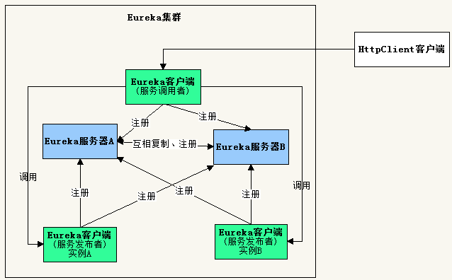
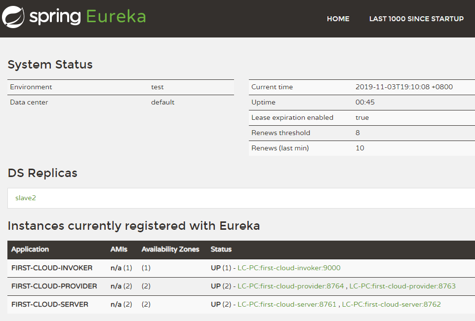
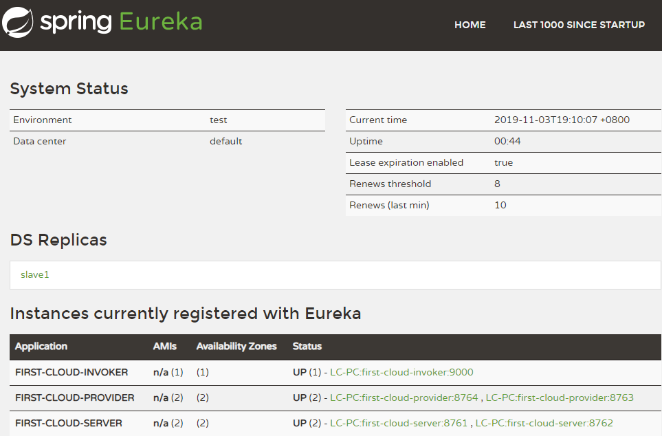

原文连接:https://www.cnblogs.com/gdjlc/p/11788591.html
上篇文章《SpringCloud之Eureka：服务发布与调用例子》实现了一个简单例子，这次对其进行改造，运行两个服务器实例、两个服务提供者实例，服务调用者请求服务，使其可以进行集群部署。
集群结构如下图所示。

由于开发环境只有一台电脑，要构建集群，需要修改hosts文件，在里面添加主机名映射。
127.0.0.1 slave1 slave2
一、服务器端
1、创建项目
开发工具：IntelliJ IDEA 2019.2.2
IDEA中创建一个新的SpringBoot项目，名称为“first-cloud-server”，SpringBoot版本选择2.1.9，在选择Dependencies(依赖)的界面勾选Spring Cloud Discovery ->
Eureka Server，创建完成后的pom.xml配置文件自动添加SpringCloud最新稳定版本依赖，当前为Greenwich.SR3。
pom.xml完整内容可参考上篇文章《SpringCloud之Eureka：服务发布与调用例子》。
2、修改配置application.yml
由于需要对同一个应用程序启动两次，因此需要使用profiles配置。
下面配置了两个profiles，名称分别为slave1和slave2，当使用slave1启动服务器后，会向http://slave2:8762/eureka/注册自己，当使用slave2启动服务器后，会向
http://slave1:8761/eureka/注册自己，即两个服务器启动后，互相注册。
server:
port: 8761
spring:
application:
name: first-cloud-server
profiles: slave1
eureka:
instance:
hostname: slave1
client:
serviceUrl:
defaultZone: http://slave2:8762/eureka/
---
server:
port: 8762
spring:
application:
name: first-cloud-server
profiles: slave2
eureka:
instance:
hostname: slave2
client:
serviceUrl:
defaultZone: http://slave1:8761/eureka/3、修改启动类代码FirstEkServerApplication.java
除了增加注解@EnableEurekaServer，还让类在启动时读取控制台输入，决定使用哪个profiles来启动服务器。
package com.example.firstcloudserver;
import org.springframework.boot.autoconfigure.SpringBootApplication;
import org.springframework.boot.builder.SpringApplicationBuilder;
import org.springframework.cloud.netflix.eureka.server.EnableEurekaServer;
import java.util.Scanner;
@SpringBootApplication
@EnableEurekaServer
public class FirstCloudServerApplication {
public static void main(String[] args) {
//SpringApplication.run(FirstCloudServerApplication.class, args);
Scanner scan = new Scanner(System.in);
String profiles = scan.nextLine();
new SpringApplicationBuilder(FirstCloudServerApplication.class)
.profiles(profiles).run(args);
}
}二、编写服务提供者
1、创建项目
IDEA中创建一个新的SpringBoot项目，除了名称为“first-cloud-provider”，其它步骤和上面创建服务器端一样。
2、修改配置application.yml
spring:
application:
name: first-cloud-provider
eureka:
instance:
hostname: localhost
client:
serviceUrl:
defaultZone: http://localhost:8761/eureka/,http://localhost:8762/eureka/3、添加类 User.java
package com.example.firstcloudprovider;
public class User {
private Integer id;
private String name;
private String message;
public User(Integer id, String name){
this.id = id;
this.name = name;
}
public Integer getId() {
return id;
}
public void setId(Integer id) {
this.id = id;
}
public String getName() {
return name;
}
public void setName(String name) {
this.name = name;
}
public String getMessage() {
return message;
}
public void setMessage(String message) {
this.message = message;
}
}4、添加控制器 UserController.java
package com.example.firstcloudprovider;
import org.springframework.http.MediaType;
import org.springframework.web.bind.annotation.PathVariable;
import org.springframework.web.bind.annotation.RequestMapping;
import org.springframework.web.bind.annotation.RequestMethod;
import org.springframework.web.bind.annotation.RestController;
import javax.servlet.http.HttpServletRequest;
@RestController
public class UserController {
@RequestMapping(value = "/user/{userId}", method = RequestMethod.GET, produces = MediaType.APPLICATION_JSON_VALUE)
public User findUser(@PathVariable("userId") Integer userId, HttpServletRequest request){
User user = new User(userId, "gdjlc");
user.setMessage(request.getRequestURL().toString());
return user;
}
}5、修改启动类代码FirstCloudProviderApplication.java
除了增加注解@EnableEurekaClient，还让类在启动时读取控制台输入，决定使用哪个端口启动服务器。
package com.example.firstcloudprovider;
//import org.springframework.boot.SpringApplication;
import org.springframework.boot.autoconfigure.SpringBootApplication;
import org.springframework.boot.builder.SpringApplicationBuilder;
import org.springframework.cloud.netflix.eureka.EnableEurekaClient;
import java.util.Scanner;
@SpringBootApplication
@EnableEurekaClient
public class FirstCloudProviderApplication {
public static void main(String[] args) {
//SpringApplication.run(FirstCloudProviderApplication.class, args);
Scanner scan = new Scanner(System.in);
String port = scan.nextLine();
new SpringApplicationBuilder(FirstCloudProviderApplication.class).properties("server.port=" + port).run(args);
}
}
三、编写服务调用者
1、创建项目
IDEA中创建一个新的SpringBoot项目，除了名称为“first-cloud-invoker”，其它步骤和上面创建服务器端一样。
2、修改配置application.yml
server:
port: 9000
spring:
application:
name: first-cloud-invoker
eureka:
instance:
hostname: localhost
client:
serviceUrl:
defaultZone: http://slave1:8761/eureka/,http://slave2:8762/eureka/3、添加控制器 InvokerController.java
package com.example.firstcloudinvoker;
import org.springframework.cloud.client.loadbalancer.LoadBalanced;
import org.springframework.context.annotation.Bean;
import org.springframework.context.annotation.Configuration;
import org.springframework.http.MediaType;
import org.springframework.web.bind.annotation.RequestMapping;
import org.springframework.web.bind.annotation.RequestMethod;
import org.springframework.web.bind.annotation.RestController;
import org.springframework.web.client.RestTemplate;
@RestController
@Configuration
public class InvokerController {
@Bean
@LoadBalanced
public RestTemplate getRestTemplate(){
return new RestTemplate();
}
@RequestMapping(value = "/router", method = RequestMethod.GET, produces = MediaType.APPLICATION_JSON_VALUE)
public String router(){
RestTemplate restTpl = getRestTemplate();
//根据应用名称调用服务
String json = restTpl.getForObject("http://first-cloud-provider/user/1", String.class);
return json;
}
}4、修改启动类代码FirstCloudInvokerApplication.java
添加注解@EnableDiscoveryClient，使得服务调用者可以去Eureka中发现服务。
package com.example.firstcloudinvoker;
import org.springframework.boot.SpringApplication;
import org.springframework.boot.autoconfigure.SpringBootApplication;
import org.springframework.cloud.client.discovery.EnableDiscoveryClient;
@SpringBootApplication
@EnableDiscoveryClient
public class FirstCloudInvokerApplication {
public static void main(String[] args) {
SpringApplication.run(FirstCloudInvokerApplication.class, args);
}
}
四、编写REST客户端进行测试
1、创建项目
IDEA中创建一个新的SpringBoot项目，名称为“first-cloud-rest-client”，SpringBoot版本选择2.1.9，在选择Dependencies(依赖)的界面勾选Web->Spring Web。
在pom.xml中增加httpclient依赖。


<?xml version="1.0" encoding="UTF-8"?>
<project xmlns="http://maven.apache.org/POM/4.0.0" xmlns:xsi="http://www.w3.org/2001/XMLSchema-instance"
xsi:schemaLocation="http://maven.apache.org/POM/4.0.0 https://maven.apache.org/xsd/maven-4.0.0.xsd">
<modelVersion>4.0.0</modelVersion>
<parent>
<groupId>org.springframework.boot</groupId>
<artifactId>spring-boot-starter-parent</artifactId>
<version>2.1.9.RELEASE</version>
<relativePath/> <!-- lookup parent from repository -->
</parent>
<groupId>com.example</groupId>
<artifactId>first-cloud-rest-client</artifactId>
<version>0.0.1-SNAPSHOT</version>
<name>first-cloud-rest-client</name>
<description>Demo project for Spring Boot</description>
<properties>
<java.version>1.8</java.version>
</properties>
<dependencies>
<dependency>
<groupId>org.springframework.boot</groupId>
<artifactId>spring-boot-starter-web</artifactId>
</dependency>
<dependency>
<groupId>org.springframework.boot</groupId>
<artifactId>spring-boot-starter-test</artifactId>
<scope>test</scope>
</dependency>
<dependency>
<groupId>org.apache.httpcomponents</groupId>
<artifactId>httpclient</artifactId>
</dependency>
</dependencies>
<build>
<plugins>
<plugin>
<groupId>org.springframework.boot</groupId>
<artifactId>spring-boot-maven-plugin</artifactId>
</plugin>
</plugins>
</build>
</project>2、修改配置application.yml
server:
port: 90013、修改启动类代码FirstCloudRestClientApplication.java
编写调用REST服务的代码
package com.example.firstcloudrestclient;
import org.apache.http.HttpResponse;
import org.apache.http.client.methods.HttpGet;
import org.apache.http.impl.client.CloseableHttpClient;
import org.apache.http.impl.client.HttpClients;
import org.apache.http.util.EntityUtils;
import org.springframework.boot.SpringApplication;
import org.springframework.boot.autoconfigure.SpringBootApplication;
import org.springframework.web.bind.annotation.RequestMapping;
import org.springframework.web.bind.annotation.RestController;
@SpringBootApplication
@RestController
public class FirstCloudRestClientApplication {
public static void main(String[] args) {
SpringApplication.run(FirstCloudRestClientApplication.class, args);
}
@RequestMapping("/")
public String testHttpClient(){
StringBuilder sb = new StringBuilder();
try{
CloseableHttpClient httpClient = HttpClients.createDefault();
for(int i=0;i<10;i++){
HttpGet httpGet = new HttpGet("http://localhost:9000/router");
HttpResponse response = httpClient.execute(httpGet);
sb.append(EntityUtils.toString(response.getEntity()) + "<br />");
}
}catch(Exception ex){
return ex.getMessage();
}
return sb.toString();
}
}4、测试
（1）启动两个服务器端，在控制台中分别输入slave1和slave2启动。
（2）启动两个服务提供者，在控制台中分别输入8763和8764启动。
（3）启动服务调用者。
（4）启动REST客户端。
浏览器访问 http://slave1:8761/，页面如下

浏览器访问 http://slave2:8762/，页面如下

浏览器访问 http://localhost:8763/user/1，页面输出：
{"id":1,"name":"gdjlc","message":"http://localhost:8763/user/1"}浏览器访问 http://localhost:8764/user/1，页面输出：
{"id":1,"name":"gdjlc","message":"http://localhost:8764/user/1"}浏览器访问 http://localhost:9000/router，多次刷新页面，页面输出在8763和8764切换：
{"id":1,"name":"gdjlc","message":"http://localhost:8763/user/1"}{"id":1,"name":"gdjlc","message":"http://localhost:8764/user/1"}浏览器访问 http://localhost:9001/，页面输出
{"id":1,"name":"gdjlc","message":"http://localhost:8764/user/1"}
{"id":1,"name":"gdjlc","message":"http://localhost:8763/user/1"}
{"id":1,"name":"gdjlc","message":"http://localhost:8764/user/1"}
{"id":1,"name":"gdjlc","message":"http://localhost:8763/user/1"}
{"id":1,"name":"gdjlc","message":"http://localhost:8764/user/1"}
{"id":1,"name":"gdjlc","message":"http://localhost:8763/user/1"}
{"id":1,"name":"gdjlc","message":"http://localhost:8764/user/1"}
{"id":1,"name":"gdjlc","message":"http://localhost:8763/user/1"}
{"id":1,"name":"gdjlc","message":"http://localhost:8764/user/1"}
{"id":1,"name":"gdjlc","message":"http://localhost:8763/user/1"}请求了10次，8763和8764分别被请求5次，可见已经达到负载均衡。